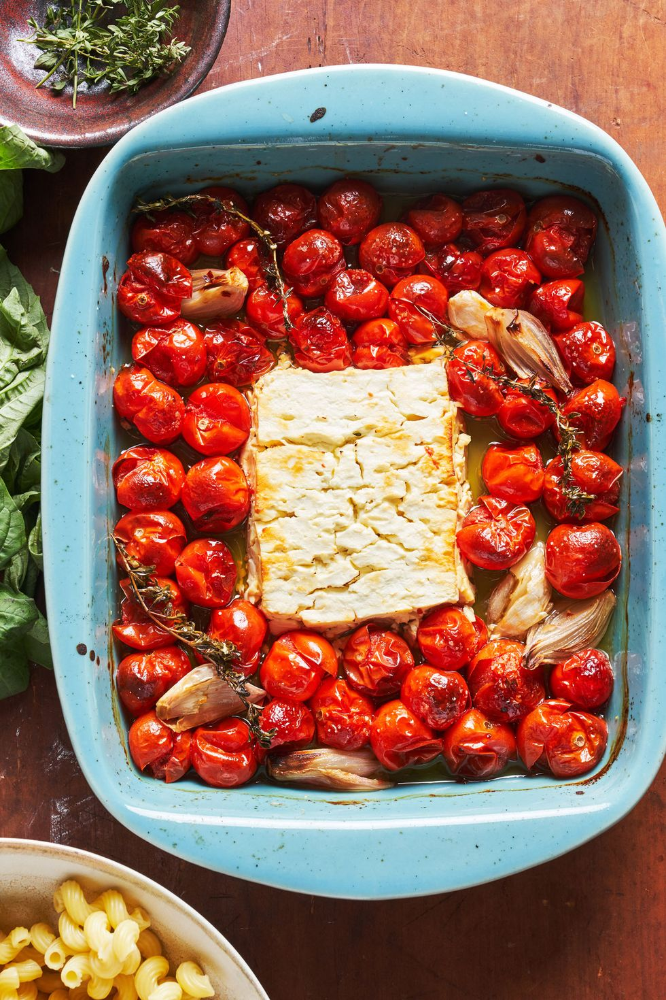

Baked Feta Pasta

The Baked Feta Pasta that went viral on TikTok
Very easy and tasty pasta recipe for your dinner
Ingredients
- 2 pt. cherry or grape tomatoes
- 1 shallot, quartered
- 3 cloves garlic, smashed
- 1/2 c. extra-virgin olive oil
- Salt to taste
- Pinch crushed red pepper flakes
- 1 block feta
- 3 springs fresh thyme
- 10 oz. pasta
- Zest of 1 lemon (optional)
Steps
- Preheat oven to 400°. In a large ovenproof skillet or medium baking dish, combine tomatoes, shallot, garlic, and all but 1 tablespoon oil. Season with salt and red pepper flakes and toss to combine.
- Place feta into center of tomato mixture and drizzle with remaining 1 tablespoon oil. Scatter thyme sprigs over tomatoes. Bake for 40 to 45 minutes, until tomatoes are bursting and feta is golden on top.
- Meanwhile, in a large pot of boiling salted water, cook pasta until al dente according to package directions. Reserve ½ cup pasta water before draining.
- To skillet with tomatoes and feta, add cooked pasta, reserved pasta water, and lemon zest (if using) and stir until combined. Garnish with basil.